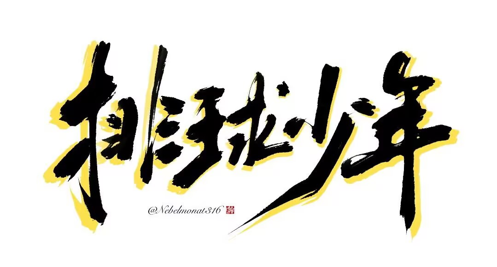

《排球少年》— 无可挑剔的竞技故事
《排球少年！！To The Top》完结撒花！
.jpg)
随着昨天第四季下半的完结，我想，也是时候写一篇对于这个系列的观后感了。 这篇专栏大体上分成两大部分，第一部分，我会以《排球少年》为例，说一下为什么我们会喜欢竞技类故事的理由，所以这部分其实没有太多对于《排球少年》本身的评价；而第二部分，我们会回归正题，再来详细的聊一聊《排球少年》这部作品本身，到底优秀在哪里。当然，在文章的最后，我也会简单的带过我对第四季这个受到较多争议的一季的看法。
我自己不是一个体育竞技的爱好者，对于那些热门的赛事，像是足球、篮球等，我也都不怎么关注。但是，从真实的大环境来看，体育竞技才是世界娱乐的主流；甚至这项娱乐活动，早在古希腊时期就已经流行起来，可见人们打从内心里，对于竞技活动的热爱与追求。 而到了现在这个时代，观看体育竞技也早已不是什么难事，人们已经不需要特地舟车劳顿前往特定的体育场地去观赏比赛，在家中打开电脑、电视，就能够以自己最舒服的方式，去完整的看完一场比赛。
那么这里就迎来了一个问题，也是我前几年接触了竞技类故事之后所产生的一个疑问：如果真实的竞技的观看门槛那么低，如果真实的竞技就已经如此精彩热血，那么，竞技类故事存在的意义，到底是什么？
这个问题的答案，在我看了《排球少年》之后，得到了一些初步的想法。如果要我自己总结的话，我会归纳成两点：第一，放大角色的内心想法；第二，对于高光瞬间的聚焦。
我们先来聊聊前者。
在真实的竞技中，我们只能够体验竞技本身所带来的紧张感，但是我们却无法得知，每一个选手，每一个参与在竞技中的人，他们心里在想些什么。唯一能够窥探他们心中想法的办法，也仅有赛后的采访环节；但是即便如此，很多时候我们也只能够听见一些较为官方、客套的回复，距离选手心中的真正想法，可能还是存在着距离。
但是与此同时，我相信每个参与过竞技活动的人都会明白，在瞬息万变的赛场上，其实内心活动是非常丰富且复杂的；对于比赛局势的分析与判断、对于策略的拿捏与运用、乃至于上升到对于竞技与人生的思考，在体力迅速消耗，精神高度集中的比赛里，往往都会浮现出来。
而这些心里的变化，真实竞技中，除非自己上场，否则是呈现不出来的；但是，在竞技类故事里，要展现这些，就变得轻而易举了。
也就是说，竞技类故事或许在紧张感与真实度上，都可能比不过真实竞技；但是，它却能够在比赛之余，放大角色的内心想法，甚至透过比赛，去回忆起角色过往的点点滴滴，让作为观众的我们，不仅仅在欣赏一场精彩刺激的比赛，而是在随着比赛，逐步了解这些选手，理解发生在他们身上的一切，明白此刻他的所思所想，进而对他产生更为强大的共鸣，对比赛投入更为丰厚的情感。
而正是这股“情感”，让竞技类故事得以在一定程度上，让观众产生超出真实竞技的体验。
毕竟，不是所有真实竞技里的选手，我们都认识、理解；对于陌生人的比赛，我们自然也就不会产生过多地热情，就更不用说全程都投入到赛事之中了。但是，在竞技类故事之中，作品往往都会付诸足够充足的笔墨去刻画，去描绘选手们的内心；换言之，每一场比赛，我们所看见的角色，都会在故事推进的过程中，变成我们的“熟人”。
看着“熟人”的比赛，我们又怎能不去为其摇旗呐喊呢？
不仅如此，在竞技故事中，只要故事愿意，场上每个人的心态，都能够被表现出来；包括主角方，也包括对手们。 是的，你看着主角方一步一脚印的成长，你自然希望他们能够取得胜利；但是，在比赛的过程中，故事也会告诉你对方也同样努力、同样付出、同样渴望胜利，他们对于每一分的追求，也绝对不输给主角方的任何人。 而这，就是一场精彩的竞技所体现出来的事物：拼尽全力去争取胜利；每个人都为此付出了一切，但在赛场面前，人人平等。这种简单至极，却又因为简单而渲染出来的复杂，正是竞技所带来的张力与紧张感。
真实竞技，透过你来我往的局势产生张力；竞技故事，除了设计出于真实竞技相似的局势之外，它还能够透过放大每个角色的内心想法，来进一步的扩大剧情张力，让观众得以更加的投入，更加纠结于每一场比赛的结果。
cut-off 对于高光瞬间的聚焦 不仅仅是对于选手，对于角色有着更细致的刻画与塑造，竞技类故事的另一个重要优势，就在于它能够依照剧本去操纵每场比赛的局势，能够人为的创造出更惊心动魄的比赛过程，让比赛不会出现、又或者是过度掉那些无聊或唏嘘的情况。
实际上，这点既是故事的优势，也是它的劣势；剧本的存在，就难免会有套路，而套路的存在，将会对于竞技的意外性产生致命的影响，甚至会对于整个故事的可信度大打折扣，变相的成为了不少人不爱观看此类题材的最根本理由。
之所以提及这一点，主要是想要说明竞技类故事在剧情设计上，并不是大家想想中的那么容易，要如何写出精彩的对局，又同时兼备惊喜感，我想是每一个同类题材创作者都会面临的一个重大难题吧！
而在这里，动画这个载体又有着比起实拍更进一步的优势，那就是动画载体对于时间、空间、镜头的自由度，使得动画能够做到很多实拍，乃至于真实竞技所难以匹敌的事情。
举个最简单，也效果最为显著的例子：高光瞬间的截取。
这里我们要提到时滞错觉的这个概念。我们大脑在要做出极端反应或者在高度亢奋的情况下，对于周遭一切的感知都会随之变得更加敏锐；而大量信息量的涌入、高速运转的大脑、以及接踵而至的决策与判断，这一切，都会让我们产生一股时间被放缓的错觉，仿佛那个瞬间，就好像过了一辈子一样长久。
这样的体验，我相信我们一定感受过，尤其在参与竞技活动的时候，更是如此。
可是，对于这样的感受，实拍也好，真实竞技的补拍也罢，其实都不太可能将其还原；只能够透过客观上时间的“减速”，去反映出选手的“高速”，从而让我们去脑补出那个瞬间的“时滞错觉”。
与之相对的，在动画这个影像载体中，这个时滞错觉的使用，就变简单了；只要主观延长角色的感知时间，并使其与客观时间进行对比，那个瞬间，就是这个角色所体验到的“时滞错觉”了。
只是，即便能够自由使用，但也绝对不能滥用，否则将会导致整场比赛节奏的疲软，更会导致那些真正高光的瞬间变得不够突出，不够具有感染力。只有将这个“时滞错觉”，运用到了那些能够扭转局势的高光时刻上，我们观众，才会随着角色一起，对那一瞬间的决策是否能够成功感到焦躁与期待、才会因为成功而感到骄傲与自豪、才会在之后随着场上的所有人一同欢呼。
而能够如此聚焦的把每一场比赛的高光谱写的如此具有感染力，也就只有故事，甚至是只有动画这个载体，才能够达到的高度了。单就《排球少年》，令我们印象深刻的，就已经足够多了，无论是影山与日向第一次打出速攻配合的瞬间、还是月岛终于拦下牛岛的扣杀的瞬间、乃至于最新一个季度里日向接下了没人能够想到的那一球的瞬间；这一些关键刹那的雕琢，让这部作品得以绽放出其最宝贵的光芒出来。
当然，如同我前面所说，作品不能够只堆砌高光，这样效果只会不增反降；只有扎实的渲染每一场比赛的拉锯，努力表现出每个选手对于每一分的追求，才有可能使这些所谓的高光，完美的展现出它应有的发挥。
而只要能够做到这样，即便比分拉锯的设计依旧略显套路，即便整体赛局的走势依旧很难逃离观众们的想象；但是，它对于比赛过程的张力与渲染力，就已经能够超越一般竞技活动所带给我们的感受了。
所以结合这两点，为什么竞技类故事题材依旧有它的受众，为什么它无法被真实竞技所完全取代，我相信就已经阐述的足够清楚了。
诚然，这也只不过是一些我个人的思考，绝对还有很多角度是我没有想到、没有提及的；也必然存在不少故事，是没有充分发挥它应有的长处，甚至连基础的叙事都做得很糟糕，导致他人的反感与排斥的。
只是我相信，只要故事讲好了，它必然能够征服观众；故事基于现实，但却同时也能够超脱于现实，做到、并能够讨论一些现实所无法企及的事物。
无可挑剔的竞技故事
好了，前面一大段，几乎都与《排球少年》这部作品本身关系不大。
但是，我之所以要花费大量的笔墨去讨论这个课题，其实就是为了想要从这个特别的角度，去论证《排球少年》的优秀。如果达不到《排球少年》这样的优秀，我们又从何谈起“故事比起真实的优势”呢？如果《排球少年》自己没有做到我所提及的“角色塑造”与“高光时刻”，我又怎么能够想到对于这个课题的回答呢？
是的，前面的长论述，就只是想要告诉大家，《排球少年》在这两点上，真的做到了极致。
理所当然的，除了这两点外，《排球少年》还有不少优点。
最根本，也是我认为最重要的，是作品对于排球这项竞技运动扎实、却又足够深入的挖掘。
作品透过故事与比赛，清晰地让我们观众了解到这个比赛的种种规则，包括最基本的球不能落地、在同个队伍中只能连续碰球3次、场内场外的区别与评判等。
在基础的规则之上，作品更重要的，也是我自己最喜欢《排球少年》的一点，就在于它透过不同的队伍，甚至就只是主角方的这支队伍，去展现出排球这项竞技的不同策略、打法、风格，以及这些不同的风格之间的碰撞。
在《排球少年》的故事中，我们可以看见以速攻与攻击节奏见长的主角队“乌野”，也有以拦网为主要打法的“伊达工”，也有平均素质与综合实力极高的“青叶城西”，也有突出王牌打手的绝对统治力的“白鸟泽”，更有依靠接球防御为重点核心的“音驹”，当然也有整体灵活多变的“稻荷崎”。
不同的队伍依靠着其队员的优势，又或者其教练的想法，逐渐发展成风格不一样的队伍；这，就是这部作品所展现出来的多元性。但是比起多元本身，多元之间的碰撞，也就是这些队伍之间的比拼，更是这部作品最精彩的一环。
透过比赛，我们可以看见不同风格之间的对撞；攻击型对上防御型，“矛盾之争”所产生的交锋；多重攻击手段对上扎实稳重强杀，进化与传统的观念交锋；同样灵活多变的攻击打法，适应力与稳定度的对决；一场又一场的比赛，它们比拼的不仅仅是技术的对决，很多时候更多的是在逼迫背后的理念，比拼着他们背后无形中所背负的打法与风格。
而这，正是这部作品为什么已经播出了4季，它的比赛给我们的观感依旧耳目一新，每一场胜负都如此惊心动魄的理由了。
当然，虽然排球是一个更加注重团队的竞技运动，本作也没有放弃对于那些富有天赋的球员的塑造。更甚者，很多所谓的队伍风格与打法，其实也不过是围绕着他们中最关键的球员，所逐渐搭建出来的。
以主角团的“乌野”为例，在两个天才一年级加入之前，其实一直都没打出特别好的成绩出来；但是在拥有了影山精度极高的托球之后，各种截然不同的攻击手段才得以逐步被实现出来，再加上日向速攻所带来的威胁与诱导，迫使对方无法及时判断乌野的攻击手段，让这支队伍得以展示其强大的多元攻击手段。
又以“白鸟泽”为例，很显然的就是以牛岛作为其核心，以其具有统治地位的扣杀为主要攻击手段，其他的一切都是为了让他能够更好地发挥而已。
这就是排球这项竞技运动的魅力：它绝对需要团队的配合，孤身一人是绝对玩不了这项运动的；但是与此同时，一个具有天赋与才能的个体，却又能够为整支队伍带来质变，让团队不会变成一盘散沙，而是极具凝聚力的铁球。
而《排球少年》这部作品，让我最满意的部分，就是它将这个魅力，展现的淋漓尽致。
不仅如此，本作在叙事上的表现，也近乎是无可挑剔的。
这其中我觉得最值得一提的，就是作品对于每个环节的充分展示。它不会为了所谓的尽快推进剧情，而忽略那些应该被注重的情节与桥段；无论是训练与锻炼的情节、还是每一场比赛的各个细节，它都给予了充足的时间去展示。甚至，像是与“白鸟泽”以及“稻荷崎”的比赛，作品更是夸张的用到了接近10集的篇幅，去叙写这两场举足轻重的重大赛事。
足够充足的篇幅，让作品每一个桥段、每一段情节、每一处细节，都具备了极高的可信度；我们会相信选手们事前的锻炼所带来的成效，我们会相信大家对于每一球都要抢下的精神与态度，我们更会逐渐不自觉的相信，这场被设计出来的比赛，就是一场真实存在的比赛。
每一个参与到其中的个体，都为了这项活动付出了他所能付出的一切，这种情绪与情感，随着赛事一分接着一分的过去，就会一点接着一点的烙印进我们的心里；渐渐地，我们不再只是站在一旁的旁观者，我们就变成了那个想要赢下这一分的球员。
这，就是这部作品强大的感染力的由来。
所以，为什么几乎每个看过《排球少年》的观众，都会无法自拔的深陷在这个故事之中？
它没有什么特别的理由，它就只是将一场场排球比赛，以近乎乃至超越现实比赛的竞技水平展现出来；无论是对于局势的高张力把控，还是对于不同风格队伍的充分展现，还是对于每一场比赛中的选手进行了极其充足的补充，乃至于所有站在场外的参与者的反馈，作品都敏锐且精准的捕捉到了。
《排球少年》，就是这样一部无可挑剔的竞技故事。
